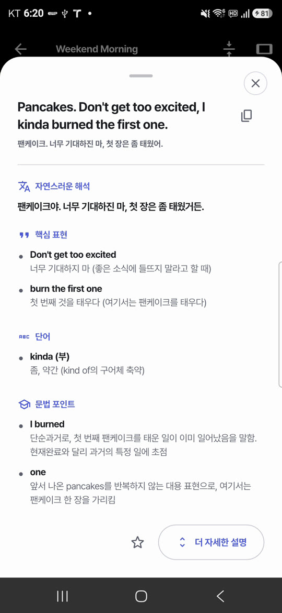
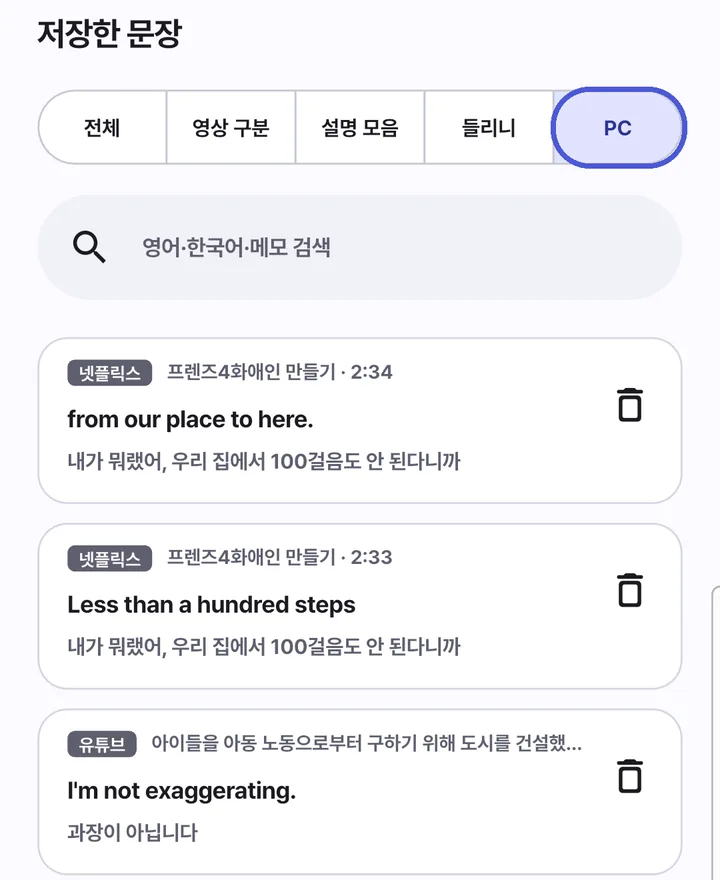
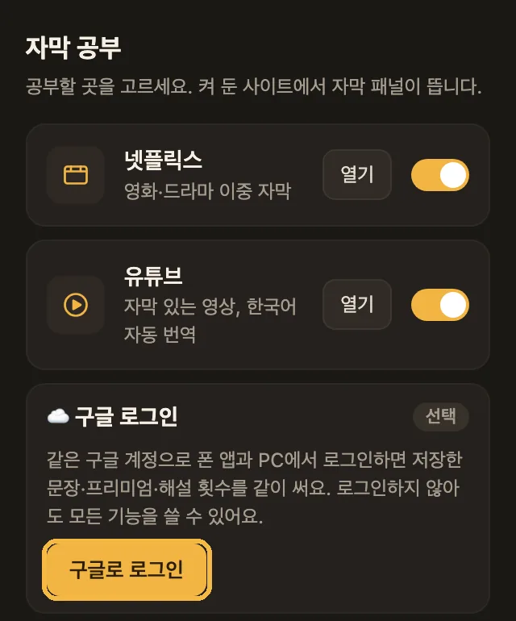
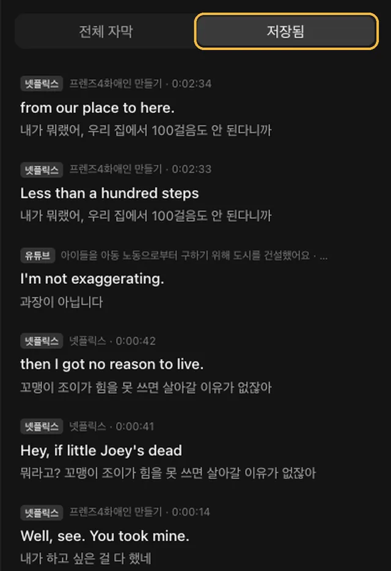

문장 단위로 반복
한 문장씩 이동하고 반복하고, 속도를 늦추세요. 영어·한국어 자막을 함께 또는 따로 볼 수 있어요.
폰에서는 가지고 있는 미드·영화 파일을, PC에서는 넷플릭스·유튜브의 문장을 하나씩 듣고, 따라 말하고, 마음에 드는 대사는 저장하세요.
안드로이드 앱 · 회원가입 없이 바로 시작
영상과 자막 파일이 들어 있는 폴더를 고르면, 앱이 알아서 영상과 자막을 짝지어요. 영상은 인터넷에 올라가지 않고 폰 안에서만 재생돼요.
한 문장씩 이동하고 반복하고, 속도를 늦추세요. 영어·한국어 자막을 함께 또는 따로 볼 수 있어요.
안 들린 구간의 소리를 AI가 받아 적고, 연음·축약·생략이 왜 그렇게 들리는지 발음 규칙으로 알려 줘요. 소리 받아쓰기는 앱 전용 기능이에요. PC 확장 프로그램에서는 자막 문장을 발음 규칙으로 풀어 줘요.
앞뒤 대사를 보고 자연스러운 해석과 핵심 표현, 뉘앙스를 짧게 풀어 줘요.

PC에서 영상을 보면 오른쪽에 대사 전체가 펼쳐지고, 화면 아래엔 영어·한국어 자막이 함께 나와요.
Morning! What smells so good?
좋은 아침! 뭐가 이렇게 좋은 냄새야?
Pancakes. Don't get too excited, I kinda burned the first one.
팬케이크. 너무 기대하진 마, 첫 장은 좀 태웠어.
Are you kidding? I'm gonna eat 'em all.
무슨 소리야? 내가 다 먹을 건데.
쉐도잉 단축키, 단어·전구 설명, 발음 규칙, 폰으로 이어 보기까지 실제 화면으로 보여 드려요. 보고 싶은 부분부터 눌러도 돼요.
PC 크롬 브라우저에 한 번만 추가하면, 넷플릭스·유튜브를 열 때마다 자동으로 켜져요.
스크린 영어 쉐도잉 - 자막 공부 페이지에서 Chrome에 추가를 누르고, 다시 확장 프로그램 추가를 눌러요.
주소창 오른쪽 확장 프로그램 아이콘을 누르고, 스크린 영어 쉐도잉 옆 고정을 눌러요.
넷플릭스나 유튜브에서 영어 자막이 있는 영상을 틀면, 화면 오른쪽에 대사 패널이 나와요.
툴바 아이콘을 눌러 앱과 같은 구글 계정으로 로그인하면, 저장 문장과 프리미엄이 함께 이어져요.
로그인은 선택이에요. 로그인하지 않아도 모든 기능을 쓸 수 있고, 저장한 문장은 그 기기에만 남아요.
폰에서 저장한 대사는 PC에서, 넷플릭스에서 저장한 대사는 폰에서 다시 봐요.
앱을 다시 설치해도 같은 계정으로 로그인하면 저장 목록이 돌아와요.
앱에서 구독하면 같은 계정의 PC 확장 프로그램에서도 프리미엄이 적용돼요.



저장한 문장은 앱을 열 때와 PC에서 영상을 열 때 자동으로 맞춰져요. 바로 맞추고 싶으면 앱 마이 탭의 계정 메뉴나 PC 툴바 아이콘에서 지금 동기화를 누르세요. 로그아웃하면 다른 기기에서 가져온 문장은 사라지고, 그 기기에서 직접 저장한 문장은 그대로 남아요.
원어민은 단어를 하나씩 끊어 말하지 않아요. 소리가 이어지고, 바뀌고, 사라져요. 들리니는 아래 25가지 규칙으로 대사가 실제로 어떻게 들리는지 한글로 풀어 줘요. 예시를 누르면 영어로 들려요.
앞 단어 끝 자음이 뒤 단어 첫 모음에 붙어 한 덩어리로 들려요.
him·her·have 같은 대명사·조동사의 h 가 빠지고 앞 단어에 붙어요.
모음과 모음 사이에 w·y 소리가 살짝 끼어 끊기지 않고 이어져요.
앞 소리가 뒤 소리와 섞여 다른 소리가 돼요. d·t 뒤의 you 가 대표적이에요.
모음 사이의 t·d, 그리고 rt·rd 의 t·d 는 혀를 한 번 튕기는 짧은 ㄹ 소리가 돼요.
s 뒤처럼 숨을 내뿜지 않는 p·t·k 는 ㅃ·ㄸ·ㄲ 처럼 들려요.
tr·dr 은 혀가 입천장 쪽으로 당겨져 "츄·쥬"처럼 들려요.
빠르게 말하면 -ing 끝의 ng 가 n 으로 가볍게 끝나요.
긴 "이" 뒤 끝 l 은 사이에 "어"가 살짝 끼어 두 박자로 들려요.
자음 사이에 낀 t·d, 자음 앞의 've 처럼 약한 자음은 거의 소리 나지 않아요.
n 뒤의 t 가 빠지고 n 으로 이어져요.
같은 자음이 겹치면 두 번 내지 않고 한 번만 내요.
of·and·to 같은 기능어는 힘을 받지 않아 "어" 정도로 스쳐 가요.
자주 붙어 다니는 말은 통째로 짧게 줄어요.
t 를 터뜨리지 않고 목에서 잠깐 멈춰요. 쉼표(,)가 그 멈춤이에요.
끝 자음을 터뜨리지 않고 입 모양만 만든 채 다음 소리로 넘어가요.
단어마다 힘 주는 음절이 하나 있어요. 굵은 음절만 크고 길게, 나머지는 약하게 말해요.
명사·동사 같은 내용어는 세게, 기능어는 약하게 말해요. 센 곳만 들려도 뜻이 잡혀요.
힘을 받지 않는 모음은 철자와 상관없이 흐린 "어"가 돼요.
can 은 약하게 "컨", can't 는 세게 "캔" 하고 t 에서 멈춰요. 모음과 힘으로 구별해요.
r 은 혀를 어디에도 대지 않고 둥글게 말아요. 작은 r 이 붙은 "ㄹ"이 r 이에요.
f 는 윗니를 아랫입술에 대고 바람을 내보내요.
v 는 f 처럼 윗니를 아랫입술에 대고 목을 울려요.
혀끝을 이 사이에 살짝 물고 바람을 내요. 목을 울리지 않으면 θ, 울리면 ð 예요.
s 와 같은 자리에서 목을 울려 "즈"에 가깝게 떨려요.
앱의 들리니는 영상에서 꺼낸 실제 소리를 받아 적은 뒤 이 규칙으로 풀어 주고, PC 확장 프로그램은 자막 문장을 같은 규칙으로 풀어 한글 발음·IPA로 보여 줘요. 한글 표기는 소리를 잡는 길잡이일 뿐, 정답은 언제나 원어민 소리예요. 따라 말할 땐 꼭 영상 소리를 들으며 맞춰 보세요.
재생, 자막, 문장 반복과 저장은 모두 무료예요. AI 기능을 많이 쓰면 프리미엄이 편해요.
혼자 공부하기에 충분해요
앱에서 월·연 구독
Google Play에서 받기앱은 영상을 제공하지 않아요. 직접 가지고 있는 영상과 자막 파일(SRT·SMI·VTT 등)을 폰에 넣어 공부하는 앱이에요. 처음 써 보시도록 샘플 대화 영상이 들어 있어요.
네. 확장 프로그램은 본인 계정으로 보는 넷플릭스·유튜브 화면 위에 공부 도구를 더해 줄 뿐, 영상을 따로 제공하지 않아요. 자막이 있는 영상에서 쓸 수 있어요.
아니요. 회원가입 없이 모든 기능을 쓸 수 있어요. 폰과 PC에서 저장한 문장을 함께 보고 싶을 때만 구글 로그인을 하시면 돼요.
앱 들리니는 고른 구간의 실제 소리를 AI가 받아 적은 뒤, 왜 그렇게 들리는지 발음 규칙으로 설명해요. PC 들리니는 영상 소리를 듣지 않고, 넷플릭스·유튜브 자막 문장을 발음 규칙으로 계산해 보여 줘요. 그래서 PC 들리니는 무료·무제한이고, 배우가 실제로 낸 소리와는 조금 다를 수 있어요.
지금은 안드로이드 앱만 있어요. iOS 버전은 준비 중이에요.
아니요. 영상과 자막 파일은 폰 밖으로 나가지 않아요. 표현 설명을 요청한 문장, 들리니를 쓴 구간의 소리처럼 기능에 꼭 필요한 부분만 잠깐 보내요. 자세한 내용은 개인정보처리방침에 있어요.